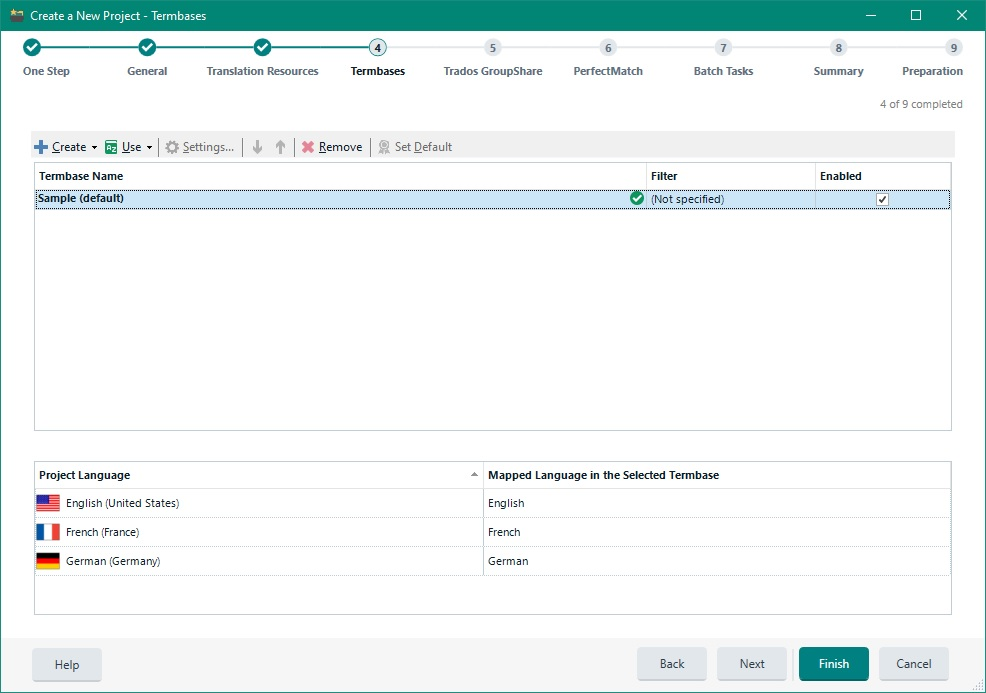

Adding Termbases
A project may be associated with one or more (file or server) termbases, which are then used for active terminology recognition during translation. This chapter gives an example of how to programmatically add a termbase (* .sdltb) file to a project.
Add a Termbase File
Termbases are multilingual databases that contain terms in the different languages. A language in a termbase is also called index. An index can essentially have any name (label). For example, the index German may be called Deutsch, DEU, etc., as MultiTerm allows users complete flexibility when it comes to naming indexes. When adding a termbase to a project Trados Studio intelligently matches the termbase indexes to the project languages. This is actually what your implementation needs to do as well, so that the correct termbase indexes are used for the corresponding project languages.
The screenshot below shows how a local termbase is selected in Trados Studio:

Start by implementing a helper function called AddTermbase, which adds a local termbase file to our sample project. This function takes a FileBasedProject object as parameter. Within this helper function you first get a TermbaseConfiguration object by applying the GetTermbaseConfiguration method to the project as shown below:
TermbaseConfiguration termbaseConfig = project.GetTermbaseConfiguration();
In the next step, create a new LocalTermbase object. Note that a local termbase is physically an * .sdltb file, which is based on the JET database system. When creating the local termbase object you need to provide the * .sdltb file name and path as parameter. Note that at this point the API will check whether the termbase file actually exists, and will throw an error is the file name is invalid. After creating the local termbase object, it can be added to the termbase configuration as shown below:
Termbase tb = new LocalTermbase(termbaseFileName);
termbaseConfig.Termbases.Add(tb);
Configure the Term Recognition Options
You may optionally configure the term recognition options through the TermRecognitionOptions class. There are a number of options that you can fine-tune for the active terminology recognition:
- The minimum match value defines the degree of fuzziness that should be used when searching for known terminology within a segment. If this value is set to e.g. 100%, then only exact forms will be recognized, i.e. no derived forms will be found. For example, when the termbase contains the term application and you set the minimum match value to 100, the term applications (i.e. plural) will not be recognized in a segment. Here, usually a value between 65% and 75% is recommended.
- The search depth controls how far your application should search for terms. Increasing the this value may increase the number of terms found, but slows down terminology recognition. Decreasing the search depth value may decrease the number of terms found, but speeds up terminology recognition. Only specify high values if you are working with large termbases. For medium-sized termbases, the default value of 200 should yield good results.
- Through a boolean parameter you can determine whether or not source terms should be shown during translation for which no target term is available. By default, the term recognition does not offer any source terms for which the termbase does not contain any target terms, as these are not very helpful to the translator anyway.
- Through the TermbaseSearchOrder you can determine how the results from multiple termbases should be shown. Of course, this parameter only applies when more than one termbase has been added to the project. Hierarchical means that the termbases are searched in the order in which they were added. As soon as a result is found in one termbase, the search will stop, i.e. any other termbases will be ignored. Sequential means that always all termbases will be searched, and the results will be sorted by termbase. Parallel means that always all termbases will be searched, the results will be sorted alphabetically, regardless of the originating termbase.
TermRecognitionOptions options = termbaseConfig.TermRecognitionOptions;
options.MinimumMatchValue = 50;
options.SearchDepth = 200;
options.ShowWithNoAvailableTranslation = true;
options.SearchOrder = TermbaseSearchOrder.Hierarchical;
Map the Termbase Indexes to the Project Languages
It is important that you map the project languages to the termbase indexes. As the indexes of a termbase can have any name, they will usually differ from the project language names. In a 'real' application you will programmatically access the termbase definition and retrieve the index labels and locales. However, for our simplified sample implementation we will just assume that we know the termbase index names and will use a hard-coded string array. Then we create three Language objects for the project source language, and the two project target languages:
string[] termbaseIndex = { "English", "German", "French" };
Language projSourceLang = new Language(CultureInfo.GetCultureInfo("en-US"));
Language projTargetLang1 = new Language(CultureInfo.GetCultureInfo("de-DE"));
Language projTargetLang2 = new Language(CultureInfo.GetCultureInfo("fr-FR"));
In the next step we add the LanguageIndexes to the termbase configuration object. When creating a TermbaseLanguageIndex object, we provide the project language and the corresponding (hard-coded) termbase index as parameters:
termbaseConfig.LanguageIndexes.Add(new TermbaseLanguageIndex(projSourceLang, termbaseIndex[0]));
termbaseConfig.LanguageIndexes.Add(new TermbaseLanguageIndex(projTargetLang1, termbaseIndex[1]));
termbaseConfig.LanguageIndexes.Add(new TermbaseLanguageIndex(projTargetLang2, termbaseIndex[2]));
Finally, we update the project applying the UpdateTermbaseConfiguration method, which uses the termbase configuration object as parameter:
project.UpdateTermbaseConfiguration(termbaseConfig);
Please note the following:
- The *.sdlproj file will only contain references to termbases. The termbase files will not be copied into the project folder structure.
- You may also add server termbases to your project. In that case the *.sdlproj file will contain a reference to the server termbase(s).
Putting it All Together
The complete function should now look as shown below:
public void AddTermbase(FileBasedProject project, string termbaseFileName)
{
#region "TbConfig"
TermbaseConfiguration termbaseConfig = project.GetTermbaseConfiguration();
#endregion
#region "AddTb"
Termbase tb = new LocalTermbase(termbaseFileName);
termbaseConfig.Termbases.Add(tb);
#endregion
#region "TermRecOptions"
TermRecognitionOptions options = termbaseConfig.TermRecognitionOptions;
options.MinimumMatchValue = 50;
options.SearchDepth = 200;
options.ShowWithNoAvailableTranslation = true;
options.SearchOrder = TermbaseSearchOrder.Hierarchical;
#endregion
#region "ProjectLanguagesAndTbIndexes"
string[] termbaseIndex = { "English", "German", "French" };
Language projSourceLang = new Language(CultureInfo.GetCultureInfo("en-US"));
Language projTargetLang1 = new Language(CultureInfo.GetCultureInfo("de-DE"));
Language projTargetLang2 = new Language(CultureInfo.GetCultureInfo("fr-FR"));
#endregion
#region "TermbaseLanguageIndex"
termbaseConfig.LanguageIndexes.Add(new TermbaseLanguageIndex(projSourceLang, termbaseIndex[0]));
termbaseConfig.LanguageIndexes.Add(new TermbaseLanguageIndex(projTargetLang1, termbaseIndex[1]));
termbaseConfig.LanguageIndexes.Add(new TermbaseLanguageIndex(projTargetLang2, termbaseIndex[2]));
#endregion
#region "UpdateTermbaseConfiguration"
project.UpdateTermbaseConfiguration(termbaseConfig);
#endregion
}